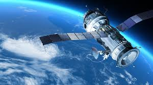
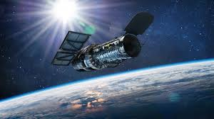
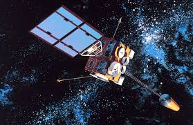
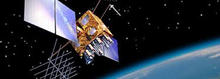

Desde tiempos antiguos, la humanidad ha soñado con viajar por el espacio...
Miles de años antes de que los viajes espaciales comenzaran, los humanos ya soñaban con volar a través del espacio. En 1865 el escritor francés Julio Verne escribió su novela De la Tierra a la Luna. Desde esa fecha, pasaron más de cien años para que el ser humano llegara a la Luna. Los primeros lanzamientos de objetos o vehículos espaciales se efectuaron a finales de la década de 1950. En esa época, los gobiernos de Estados Unidos y la Unión Soviética competían por ser los primeros en la carrera espacial. A continuación te presentamos algunas invenciones, acontecimientos y personas que han hecho historia en la exploración espacial y que nos permiten conocer muchos detalles del Universo.
8 de febrero de 1828 Nantes, Reino de Francia
24 de marzo de 1905 (77 años) Amiens, Francia
Son objetos espaciales no tripulados que orbitan la Tierra y transmiten información. Existen diferentes tipos según su uso.
Estos satélites estudian el espacio y los cuerpos celestes. Ejemplo: El Hubble.
Envían datos sobre el clima y fenómenos naturales. Se usan para prever tormentas y huracanes.
Brindan información de ubicación en todo el mundo. Son clave para mapas y transportes.
Visita NASA para descubrir más sobre satélites y la exploración espacial.